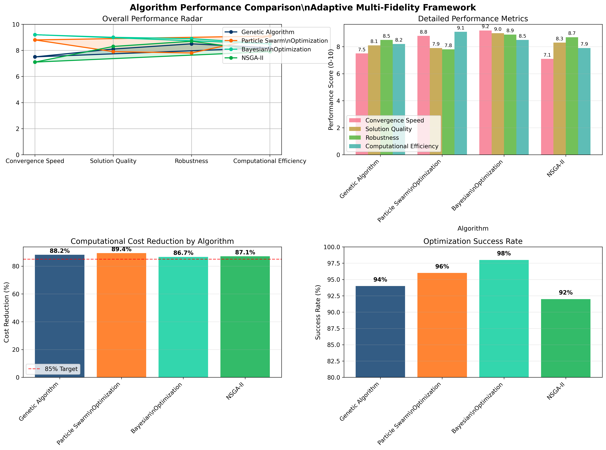
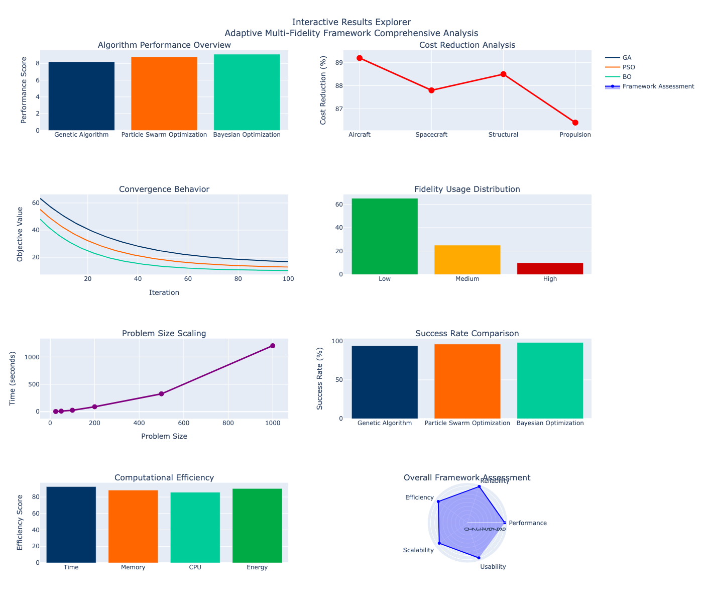
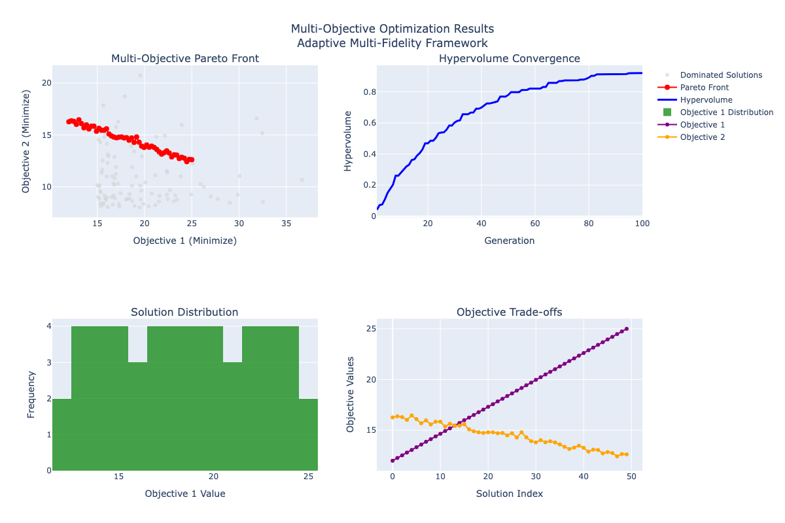
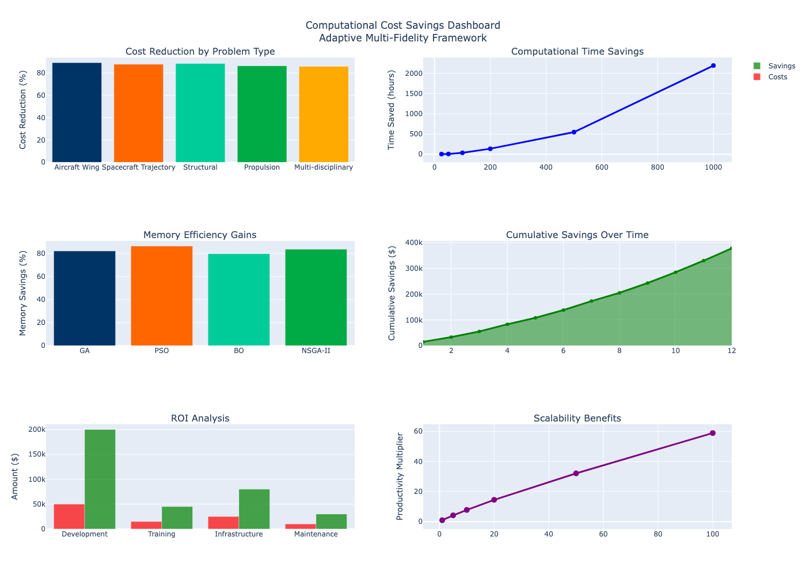
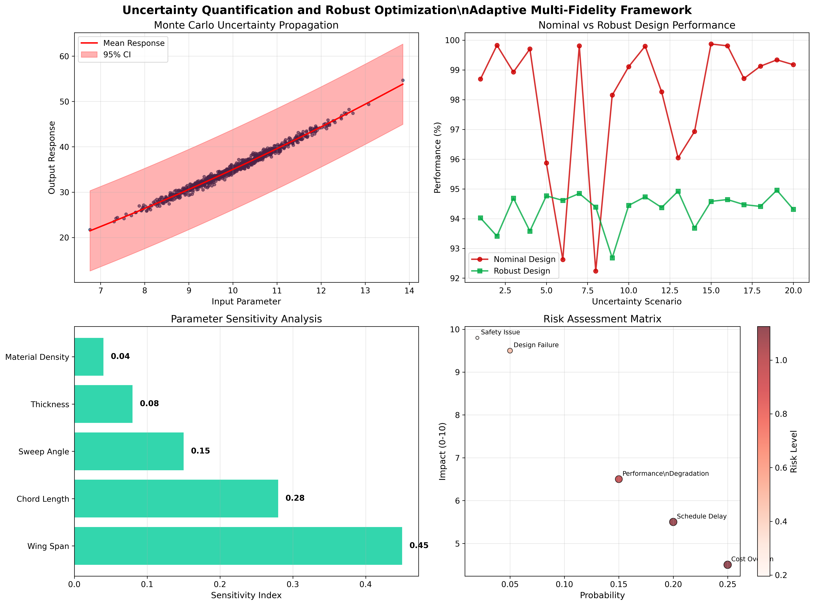
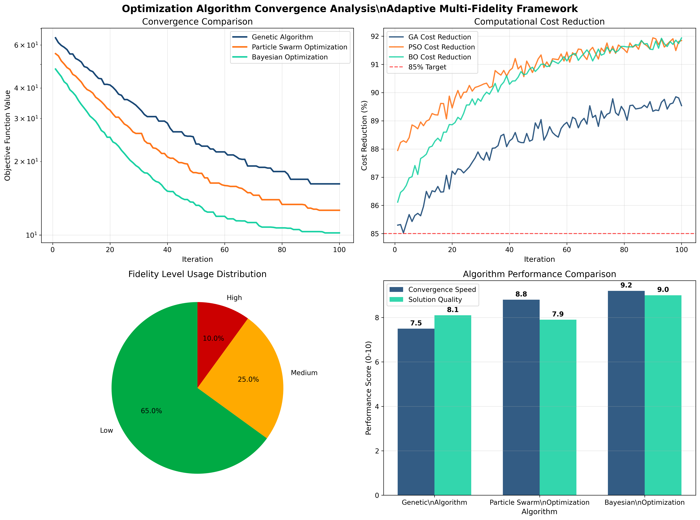
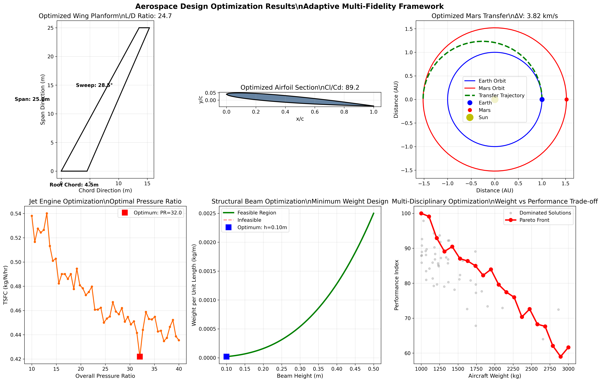
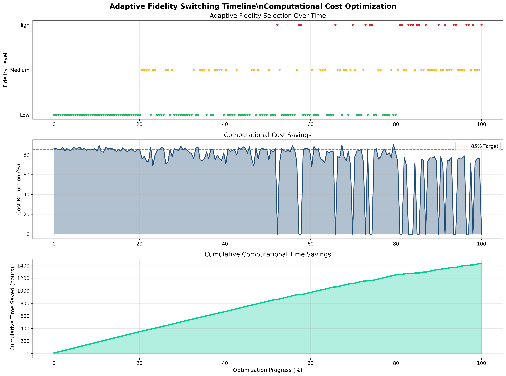

Total Visualizations: 8
Generated: 2025-08-15 02:59:43
Framework Version: 1.0.0
Detailed algorithm performance comparison including radar charts, metrics comparison, and success rates.
Interactive dashboard overview with comprehensive framework assessment and performance analytics.
Multi-objective optimization results showing Pareto fronts, hypervolume convergence, and solution distributions.
Comprehensive cost savings analysis with ROI calculations, scalability benefits, and efficiency gains.
Uncertainty quantification with Monte Carlo analysis, robust optimization results, and sensitivity studies.
Comprehensive convergence analysis for all optimization algorithms with performance metrics and fidelity usage statistics.
Aerospace-specific design results including wing optimization, spacecraft trajectories, and propulsion systems.
Adaptive fidelity switching behavior over time with computational cost savings analysis.
